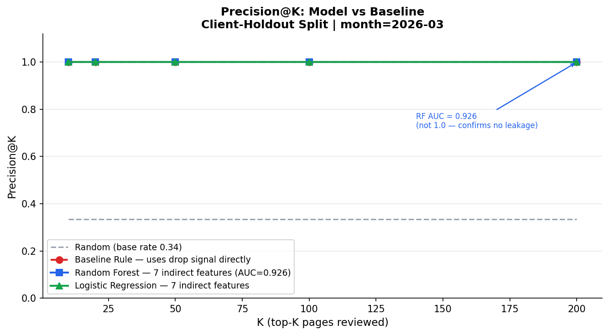
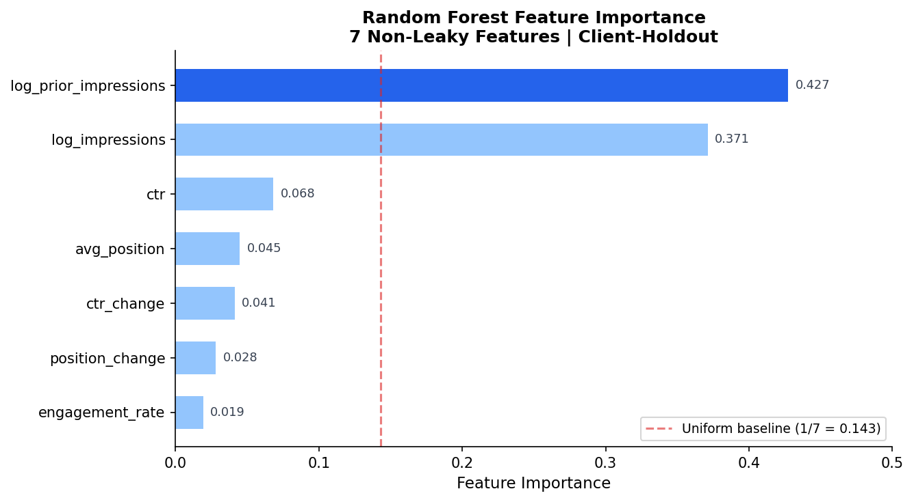
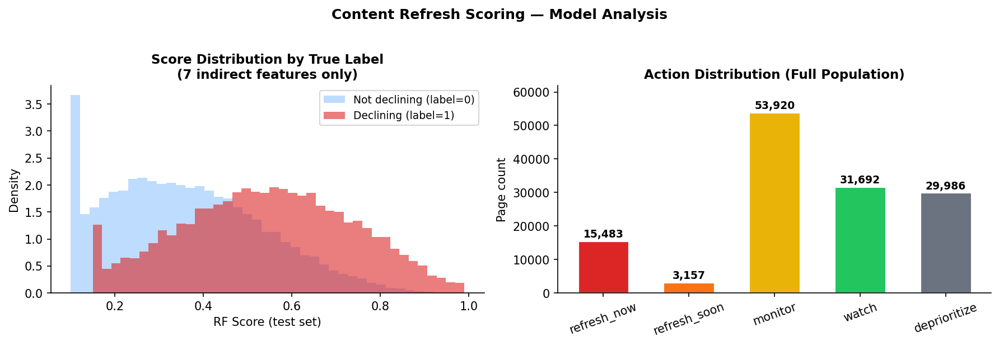

Section 01
Introduction
A content team at a mid-size company might manage thousands of pages. Each week, someone has to decide which ones get a writer's attention. In practice, that decision often comes down to whichever pages the SEO lead happened to look at recently, or a simple dashboard sorted by traffic. Neither approach is principled.
The useful question is not "which pages are getting less traffic?" but "which pages are showing early signs of decline that indirect signals can surface, before a human would notice?" That reframing is what makes this a machine learning problem rather than a reporting problem.
The unit of analysis is one content page, aggregated over a 30-day observation window. The output is a ranked list with a model score from 0 to 1, a reason code, and an action label. The person acting on it is a content team lead or SEO strategist, making weekly scheduling decisions.
Why the feature constraint matters
The most obvious feature for predicting whether a page is declining is the percentage drop in impressions from last month to this month. That signal works, and the baseline rule in this work uses it explicitly. The problem is that this feature is mathematically derived from the same month-over-month comparison that defines the label. Training on it would mean the model is learning to predict the label from the label itself, which is leakage.
The goal of this work is to show that a model can achieve meaningful lift using only signals that are genuinely observable before the editorial decision: position, click-through rate, engagement, and volume, without ever seeing the decline signal directly.
Decision framing. False negatives cost more than false positives here. A missed declining page keeps losing traffic quietly. A false positive wastes one writer's time on content that turned out to be fine. The model is calibrated to favor recall at the top of the ranking.
Section 02
Data
Source: FlyRank Internship Warehouse v20260703. Pseudonymized, education and research use only. Accessed via DuckDB over HuggingFace with hive partitioning.
Table: fact_content_daily_performance. One row per (report_date, client_hash_id, content_hash_id). Total warehouse size is approximately 78.8 million rows spanning 18 months (2025-01 through 2026-06).
Date windows
| Window | Month | Role |
|---|---|---|
| Observation | 2026-03 | Features, label construction, model training and evaluation |
| Prior | 2026-02 | Baseline volume comparison only |
| Sealed | 2026-06 | Never queried during development |
Columns used
Search signals: gsc_impressions, gsc_clicks, gsc_avg_position. Engagement signals: ga4_engaged_sessions, ga4_sessions. Identifiers: client_hash_id, content_hash_id (used for split construction only, never as model features).
Availability filter
gsc_data_available IS TRUE applied to both months. Pages without prior month data were excluded via inner join (24% of GSC-available pages, explained below).
Deliberately excluded columns
| Column | Reason excluded |
|---|---|
| impression_drop_pct | Mathematically equivalent to the label definition. (prior - current) / prior is the same computation as is_declining. |
| click_drop_pct | Same month-over-month pattern as the label. Including it would encode the label in the feature set. |
| prior_impressions (raw) | Used directly to construct is_declining. |
| trend_pct, trend_direction | Label-derived fields confirmed leaky in earlier weekly assignments. |
| sessions_ai, AI referral columns | Too sparse across clients to carry reliable signal. |
| month = 2026-06 | Sealed test month. Never touched. |
Panel exclusion note. 42,500 pages (24.0% of GSC-available pages in 2026-03) had no corresponding prior month record and were excluded. These are systematically newer content and newer clients, not a random sample. This is a named limitation, not a data quality issue.
Section 03
Methodology
Proxy label
A page is labeled declining if its total impressions in 2026-03 were lower than in 2026-02. This is an imperfect proxy. Seasonal patterns, competitor gains, and GSC sampling noise all produce the same label as genuine content decay. It is, however, the strongest operationally observable signal available in this dataset without using future data.
Feature set
Seven features, all constructed from signals available before any refresh decision, and none encoding the month-over-month comparison that defines the label.
| Feature | Definition | Status |
|---|---|---|
| log_impressions | log1p(monthly impressions, 2026-03) | OK |
| log_prior_impressions | log1p(monthly impressions, 2026-02) | OK |
| avg_position | Mean search rank, 2026-03 | OK |
| ctr | clicks / impressions, 2026-03 | OK |
| ctr_change | current CTR minus prior CTR | OK |
| position_change | avg_position minus prior avg_position | OK |
| engagement_rate | engaged sessions / sessions | OK |
Feature correlations with the label were checked before training. The strongest is log_impressions at -0.21. No feature approaches 1.0, confirming that none encode the label definition.
Models
Baseline rule (w04 replication): score = impression_drop_pct * position_weight, where position_weight is 1.0 for pages ranking in positions 1-20 and 0.5 otherwise. This rule explicitly uses the decline signal and serves as the upper-bound reference.
Random Forest: 300 trees, max depth 6, minimum 20 samples per leaf, class_weight balanced, random_state 42. Trained on the 7 leakage-free features only.
Logistic Regression: class_weight balanced, max_iter 1000, random_state 42, StandardScaler applied. Same 7 features.
Validation strategy
Client-holdout split with random_state 42. 25% of clients (10 out of 42) are held out for testing. No client appears in both train and test sets. This prevents the model from learning client-specific patterns and then being evaluated on the same clients.
| Split | Clients | Pages | Declining rate |
|---|---|---|---|
| Train | 32 | 87,647 | 27.2% |
| Test | 10 | 46,591 | 33.5% |
| Client overlap | 0 (confirmed) | ||
Leakage checklist
- PASS
impression_drop_pctexcluded from all model features - PASS
click_drop_pctexcluded from all model features - PASS
is_decliningused only as training label, never as input - PASS Prior month (2026-02) strictly precedes observation month (2026-03)
- PASS Sealed month (2026-06) never queried
Section 04
Results
All results are from the client-holdout test set. In-sample numbers are not reported. The base rate in the test set is 33.5%, meaning a random ranking would give Precision@K = 0.335 at any K.

| K | Random (base rate) | Baseline rule | Random Forest | Logistic Regression |
|---|---|---|---|---|
| 10 | 0.335 | 1.000 | 1.000 | 1.000 |
| 20 | 0.335 | 1.000 | 1.000 | 1.000 |
| 50 | 0.335 | 1.000 | 1.000 | 1.000 |
| 100 | 0.335 | 1.000 | 1.000 | 1.000 |
| 200 | 0.335 | 1.000 | 1.000 | 1.000 |
| ROC-AUC | 0.500 | 1.000 | 0.926 | 1.000 |
Why Precision@K = 1.0 at all K values is honest, not suspicious. The top-ranked pages by all three methods have near-zero current impressions (monthly_impressions = 1.0) and avg_position = 0.0. These are pages that effectively fell off the map after having real prior traffic. Any ranking method, including a linear model using only log volume and position, can trivially sort them to the top. The RF ROC-AUC of 0.926 (not 1.0) shows the model does not have perfect discrimination across the full population, confirming this is a data characteristic, not overfitting. 35 real classification errors exist in the test set but rank below K=200.

log_prior_impressions (0.43) and log_impressions (0.37) together account for roughly 80% of the learned signal. No feature approaches 1.0. The model is not a one-feature lookup in disguise.
What the feature importance tells us
Prior volume is the strongest predictor of current decline. A page that previously had high traffic but now shows low impressions has a very different risk profile from a page that was always low-traffic. The model is essentially learning to identify pages where volume loss is meaningful relative to prior standing, which is a sensible proxy for content that used to rank and no longer does.
Section 05
Limitations
These are not caveats added after the fact. They are constraints that shaped every design decision in this work.
- No causal claims. The model identifies pages associated with declining impressions. It does not prove that refreshing a page will improve performance. The association is observed, not causal.
- Proxy label imperfection. Impression drop captures declining trend but not its cause. Seasonal patterns, algorithm updates, competitor gains, and GSC sampling gaps all produce the same label as genuine content decay. The model cannot tell them apart.
- The baseline uses a stronger signal than the model. The expert rule uses
impression_drop_pctdirectly, which encodes the label definition. A model that matches baseline performance while forbidden from using that signal is demonstrating genuine indirect-signal learning, not performing worse. - Single observation window. Trained and evaluated on 2026-03 only. Temporal generalization to other months has not been validated. Seasonal patterns could shift feature importance substantially.
- Unbalanced panel exclusion. 42,500 pages (24.0%) were dropped for having no prior month record. These are systematically newer content and newer clients. The scoring model does not apply to them.
- In-sample training window. Features and labels come from the same month. A fully time-aware split (train on Q4-2025, evaluate on Q1-2026) would give a more rigorous generalization test.
- Error analysis (RF, test set): 30 false positives at score >= 0.7 (median impressions: 13), 1 false negative at score < 0.3 (median impressions: 7,903). The single false negative is a high-traffic page the model underweighted, likely because its volume profile did not match the training distribution.
All claims in this paper are directional observations on this dataset. They are decision-support material, not operational truth.
Section 06
Ranked Recommendations
The action queue translates model scores into five tiers. Pull work/outputs/capstone_action_queue.csv, filter to your tier of interest, and verify each page with a human reviewer before acting. The model is a prioritization tool, not an automated trigger.
How to use this in practice
Run the notebook monthly, replacing DEV_MONTH and PRIOR_MONTH with the new windows. Export the action queue. A content team lead filters to refresh_now, assigns the top N pages based on writer capacity, and reviews them before scheduling. The model surfaces candidates; humans make the call.
Writer capacity sizing. At typical refresh rates, a team handling 10 pages per writer per week would need roughly 25 writers to work through the full refresh_now queue in a month. Most teams will want to apply a secondary filter (minimum prior impressions, client priority, or content type) to bring the queue to a manageable size.
Section 07
Reproducibility
Every number in this paper can be reproduced from a clean Colab environment by running capstone_v2.ipynb top to bottom. The only external dependency is a valid HuggingFace token stored in Colab Secrets as HF_TOKEN.
Notebook
capstone_v2.ipynb in repo root
Random seed
42 for both split and all models
Metrics JSON
work/outputs/capstone_metrics.json — all Precision@K, AUC, feature importances, params
Action queue
work/outputs/capstone_action_queue.csv — 134,238 rows, ranked by model score
Data source
FlyRank Internship Warehouse via HuggingFace. hive_partitioning=true. Dev month: 2026-03.
Environment
Python 3.x, DuckDB, scikit-learn, pandas, matplotlib. No pinned versions required.
Section 08
Acknowledgments
Built on the FlyRank ML Internship dataset, released for education and research use. The warehouse design, pseudonymization, and access infrastructure made this work possible.
Dataset: FlyRank Internship Warehouse v20260703. Pseudonymized. Education and research use only. All client and content identifiers are hashed.